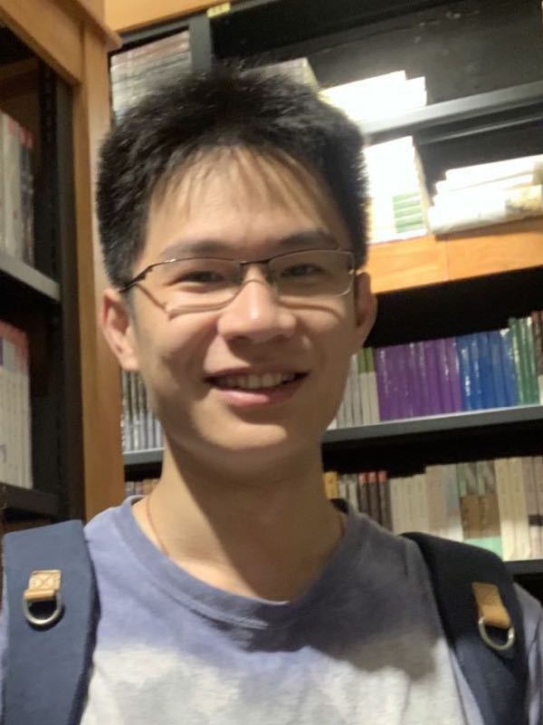

Hanru Jiang （蒋瀚如）
Assistant Professor
Center for Quantum Computing
Peng Cheng Laboratory
Contact:
Room 2012, Peng Cheng Laboratory
No. 2 Xingke 1st Street, Shenzhen 518000, China
jianghr AT pcl DOT ac DOT cn
Research
My research interests are in the area of programming languages and formal methods. In particular, I am interested in developing theories and tools to build formally certified compilers, that rigorously preserve safety, security
and correctness. I am also interested in quantum programming languges and quantum program transformations.
Publications
-
Towards Certified Separate Compilation for Concurrent Programs.
Hanru Jiang, Hongjin Liang, Siyang Xiao, Junpeng Zha, Xinyu Feng.
In Proc. 40th ACM SIGPLAN Conference on Programming Language Design and Implementation (PLDI'19). (Distinguished papar award)
[
Paper] [
@ACM] [
Slides(keynote)] [
Slides(pdf)] [
More...]
-
Non-preemptive Semantics for Data-Race-Free Programs.
Siyang Xiao, Hanru Jiang, Hongjin Liang, Xinyu Feng.
In: Fischer B., Uustalu T. (eds) Theoretical Aspects of Computing – ICTAC 2018. ICTAC 2018. Lecture Notes in Computer Science, vol 11187. Springer, Cham.
[
Paper] [
@Springer]
Hanru Jiang
Last modified: Mon Jan 14, 2020